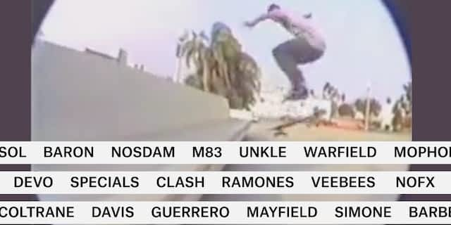
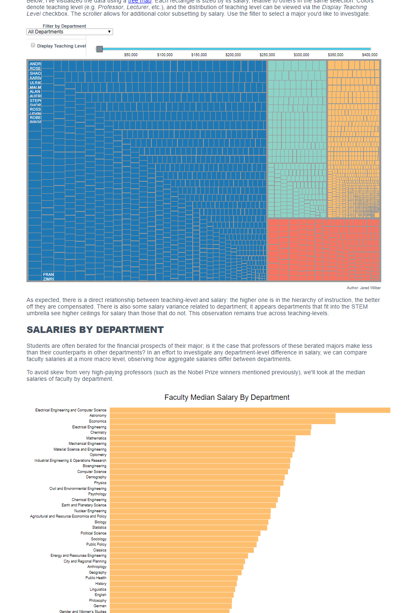
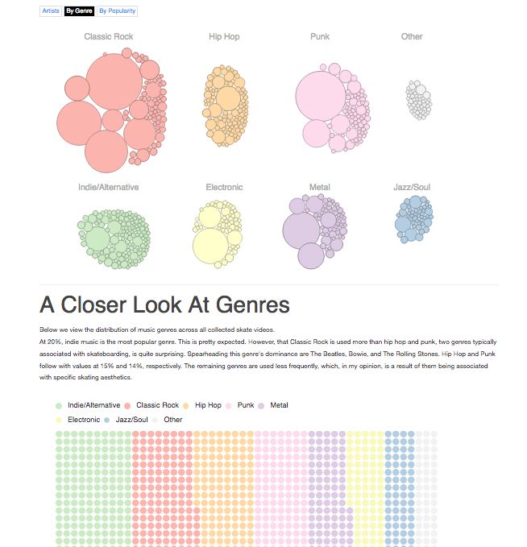
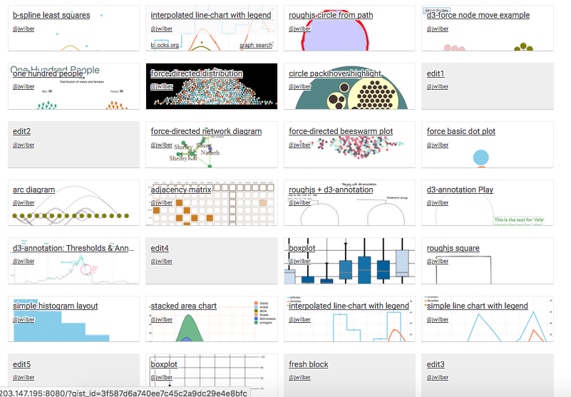

-

The Good, the Rad, and the Gnarly
"An exploration into the music of skateboarding". Visual essay I created for The Pudding.
-

Permutation Tests
A scrollable tutorial with hand-drawn SVG aesthetics.
-

U.C. Berkeley Salaries
Which professors/departments earn what?
-

Makefiles and Datascience
A tutorial on using GNU Make for reproducibility.
-

Music and Skateboarding
My original D3.js skate-music piece that served as the foundation for my Pudding article.
-

blocks
In-browser collection of my shareable d3.js examples.